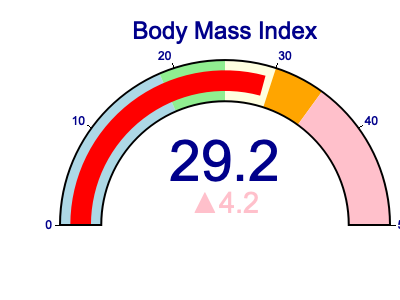
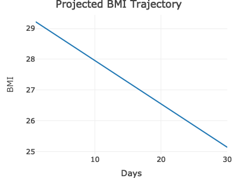
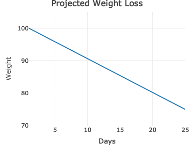
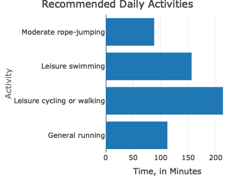

This R package is for calculation of BMI (body mass index), and some more computations based on weight loss goals. The package provides simple answers to a user’s weight loss goals in terms of how much weight loss/gain and calorie deficit/increase should be aimed for with a target weight and time frame in mind. The package also provides helpful visualizations about BMI and calorie intake change trajectory leading to the target.
Installation
You can install the development version of bmi.calculator from GitHub with:
# install.packages("devtools")
devtools::install_github("UBC-MDS/bmi-calculator-r")Functions
The package contains the following functions
-
calculate_bmi: computes user’s BMI based on weight and height. Also creates a visual of the BMI on scale -
project_bmi: computes how much average change in BMI should be achieved per week given a targeted weight and the timeframe to reach the goal. Also presents a visual trajectory for BMI -
project_calories: computes how much average calorie intake is ideal per week given a targeted weight and the timeframe to reach the goal. Also presents a visual trajectory for calories -
exercise_plan: suggests possible exercise plans to achieve the targeted weight. Also gives a graph showing how much exercise of each kind is needed per day
Example
To use the package, load the package library with following command:
library(bmi.calculator)To use the functions, see examples below:
Calculate BMI
# Weight 100kg, height 1.85 meters, BMI value returned.
calculate_bmi(100, 1.85, return_graph=FALSE)
#> [1] 29.22
# Weight 100kg, height 1.85 meters, BMI graph returned.
calculate_bmi(100, 1.85, return_graph=TRUE)
Compute average BMI change per week
# Weight 100kg, height 1.85 meters, BMI goal 25, 30 days to reach goal, return average BMI change per week.
project_bmi(100, 1.85, 25, 30, return_graph=FALSE)
#> [1] -0.98
# Weight 100kg, height 1.85 meters, BMI goal 25, 30 days to reach goal, return plot of Projected BMI trajectory.
project_bmi(100, 1.85, 25, 30, return_graph=TRUE)
Compute caloric intake per day based in a target weight
# Weight 100kg, height 1.85 meters, male, 25 years old, moderate exercise 3-5 times a week, ideal weight 75kg,
# 25 days to reach goal, return caloric intake per day based in a target weight.
project_calories(100, 1.85, 1, 25, 1.6, 75, 25, return_graph=FALSE)
#> [1] 2417.04
# Weight 100kg, height 1.85 meters, male, 25 years old, moderate exercise 3-5 times a week, ideal weight 75kg,
# 25 days to reach goal, return plot of Projected Weight Loss.
project_calories(100, 1.85, 1, 25, 1.6, 75, 25, return_graph=TRUE)
Create an exercise plan
# Weight 100kg, height 1.83 meters, female, aged 27
# Target weight: 68kg in 30 days
exercise_plan(100, 1.83, 2, 27, 68, 30)
#> Leisure cycling or walking Moderate rope-jumping
#> 213 88
#> General running Leisure swimming
#> 112 156
# Weight 100kg, height 1.83 meters, female, aged 27
# Target weight: 68kg in 30 days
# But this time, a graph instead:
exercise_plan(100, 1.83, 2, 27, 68, 30, return_graph=TRUE)
Suitability within R Ecosystem
Our BMI calculator is unique in the sense that it provides easy and instantly understandable visuals to quickly get the gist of how healthy a person is. The package does not rely on any historical data of a person’s weights, and hence needs no dataset files to be provided. The only arguments needed for the functions of this calculator are current weight and height, and target weight with timeframe in case weight change is desired. It also recommends simple figures for weight gain/loss goals. To the best of our understanding, there are currently no packages in the R ecosystem that offer functionality similar to this package.
Contributing
Interested in contributing? Check out the contributing guidelines. Please note that this project is released with a Code of Conduct. You can follow guidelines outlined here in case you want to contribute to the project. By contributing to this project, you agree to abide by its terms.
The list of contributors to the original project can be found here.
License
bmi_calculator package was created by Qurat-ul-Ain Azim, Natalie Cho, HanChen Wang, Kelvin Wong. It is licensed under the terms of the MIT license.
Credits
bmi_calculator was created following the guidelines of this Book.